Ambition 月报|十一月未完待续…
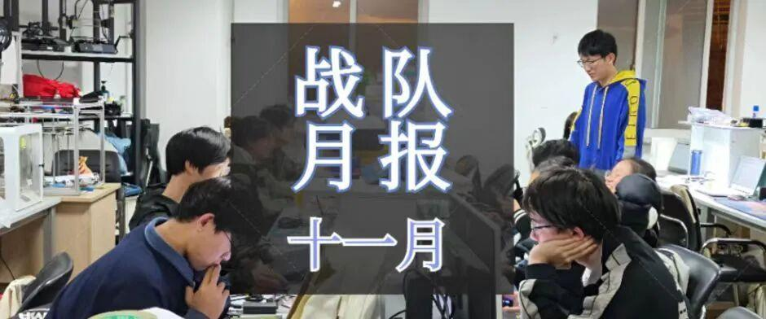

随着初雪的到来，十一月也马上结束啦，让我们一起来看看Ambition战队这个月都发生了什么吧！

PART01 培训

上个月的招新刚刚结束，许多新面孔加入到电协这个大家庭。接下来要做的第一件事当然就是——培训。
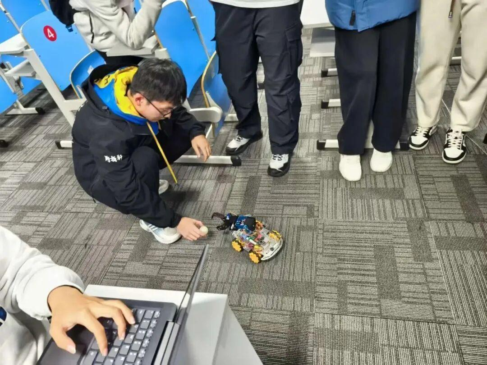
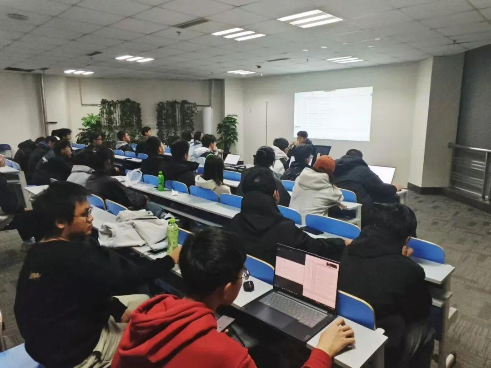
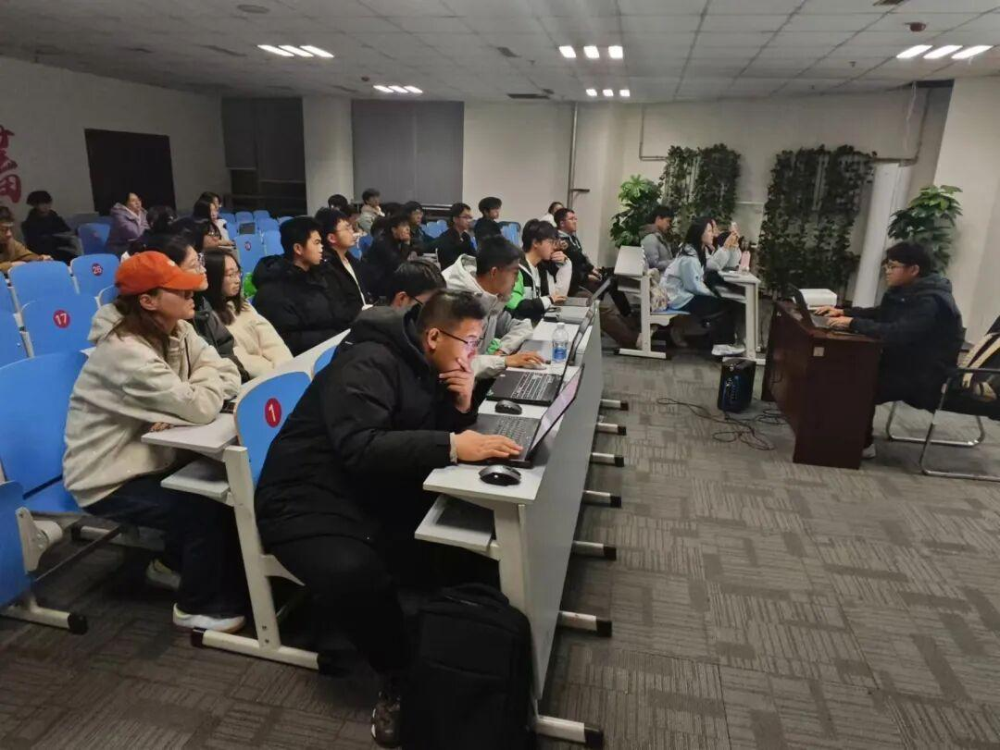
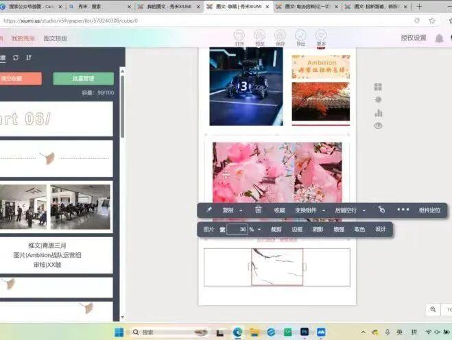
“大家都在认真学习”

PART02 备赛
由电协举办的沈阳理工大学机器人大赛也即将到来。在这一个月里面，我们也在积极准备，无论是前期的宣传，还是技术培训，都在紧锣密鼓的进行着。

PART03 交流
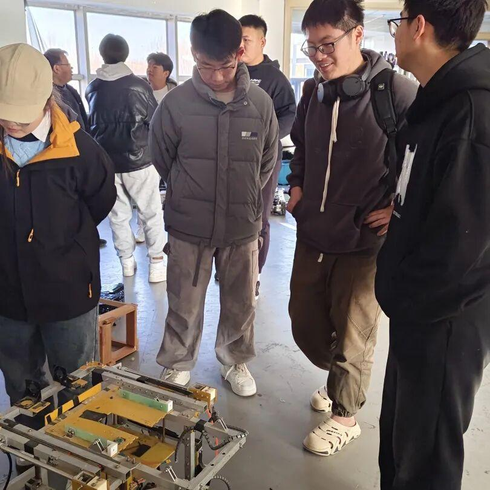
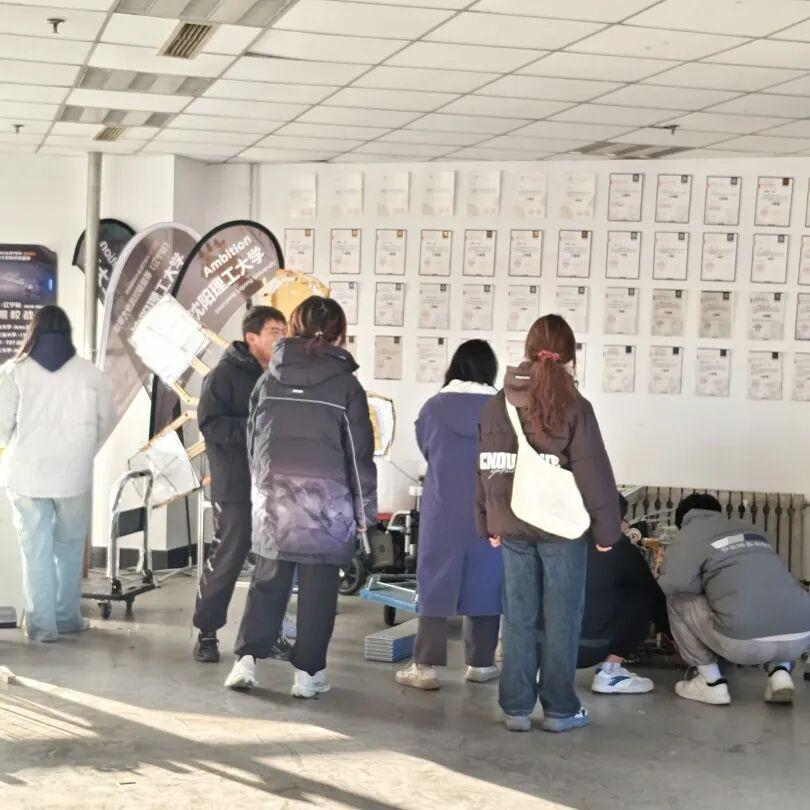
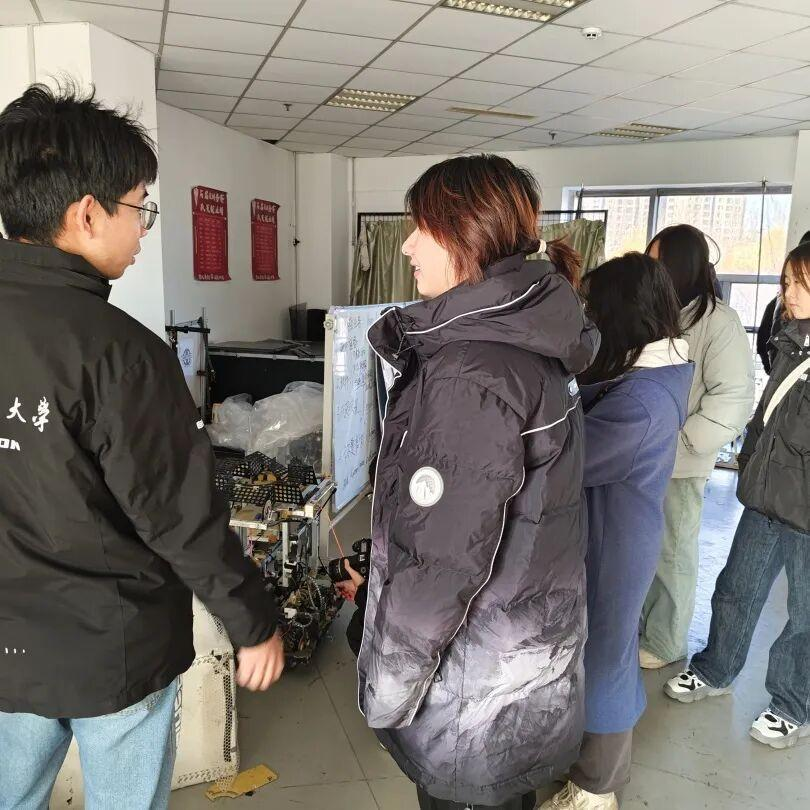
当然，在忙碌的工作间隙，也少不了战队间的交流，沈工大MEIC机器人战队来和我们进行了友好交流。虽然天气很冷，但是大家交流的热情都很高。
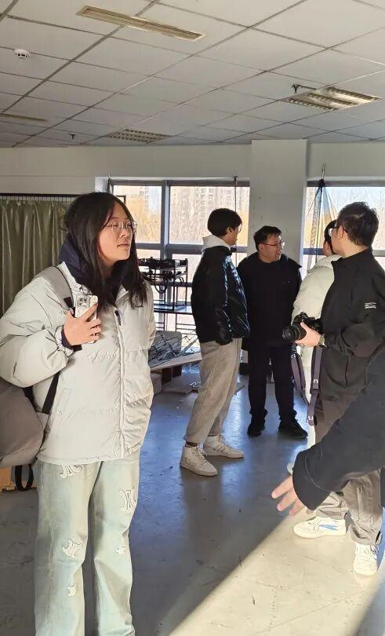
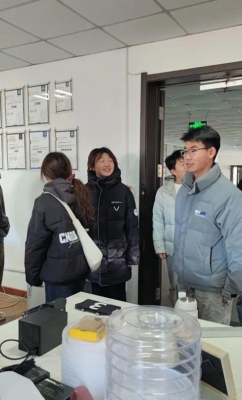
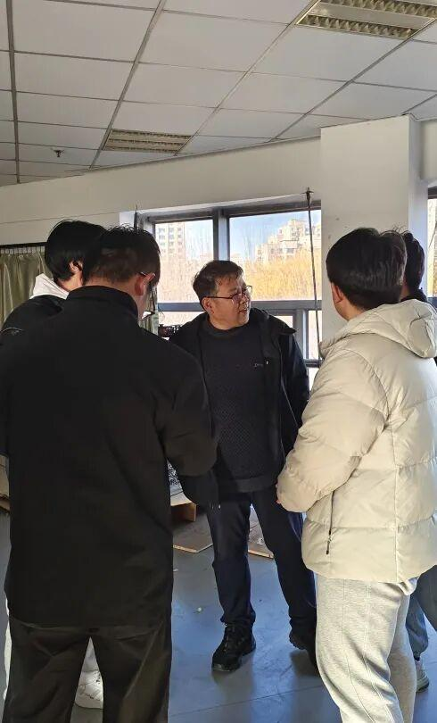
PART04 赛季规划
除了日常工作外，这个月大家又有了一个让所有人都头疼的任务——写赛季规划。
又是努力工作的一个月

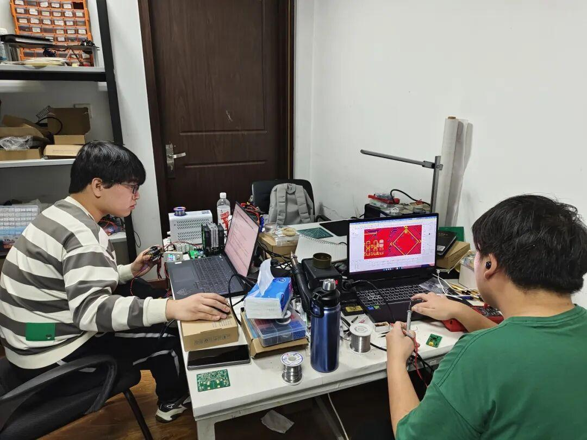
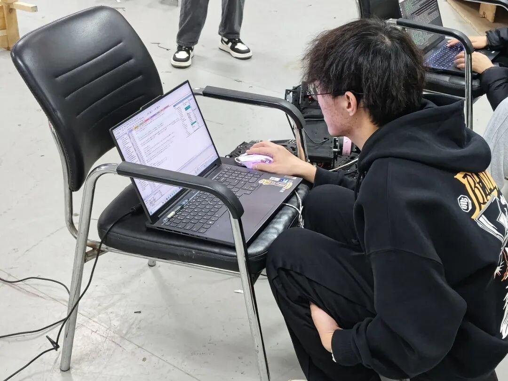
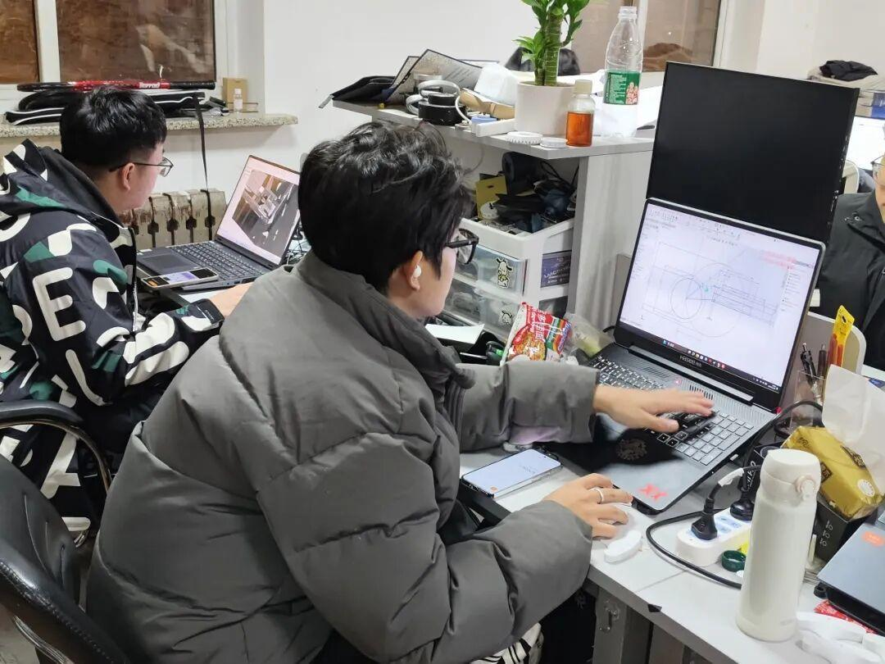
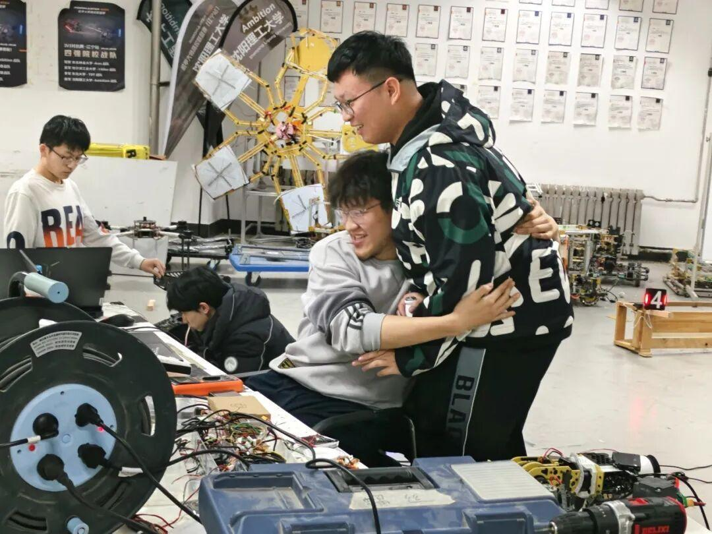
我们的故事还在继续
随着25赛季的到来，战队的任务也越来越多，在这一个月里面，有困难也有收获。我们的故事还在继续，25赛季这个舞台上，充满了未知的精彩等待我们去演绎。也祝愿大家在下一个月里都可以协调好备赛和备考，迎接下一个挑战。
-END-
推文|青唐三月
图片|Ambition战队运营组
审核|XX敏